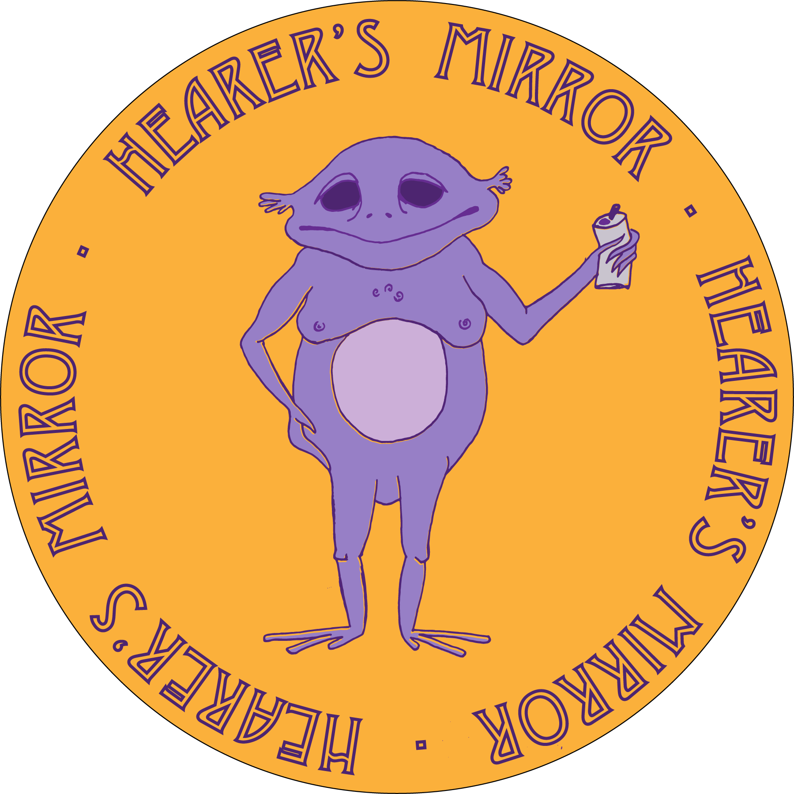

What is Hearers Mirror?
Hearer’s Mirror was founded in the summer of 2018 on a blow up mattress in New York City. While the studio apartment overlooked the beautiful Lincoln Center, the two bums who lived inside it were indeed jobless. So, out of necessity to find ways to pass the time, HM’s founder, Lippy, took to writing poetry and posting it on an anonymous Instagram ....